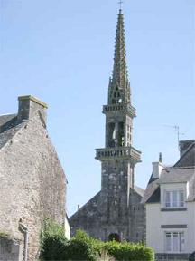
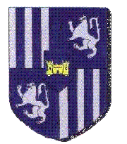

Les jeunes hommes de Plouyé
The Young Men of Plouyé
Dialecte de Cornouaille
|
Le Carnet N°2 publié fin novembre 2018 contient en outre aux pp. 16 et 17 une longue note à ce sujet, intitulée "Insurrection des Montagnards. Elle est reproduite sur la page bretonne relative au présent chant . Puis on trouve aux pages 174, 175/101 et 176 une première mouture des strophes 1 à 26 qui se termine par le renvoi: "v. p. 116". La p. 204 /116 débute par le renvoi symétrique "v. p. 101 : Les jeunes hommes de Plouyé" et se poursuit par les strophes 27 à 49 sur ladite p. 204 et les deux suivantes 205 et 206 / 117. Donatien Laurent qui a eu le carnet entre les mains précise qu'il s'agir en fait d'une seule feuille pliée dant les deux moitiés sont séparées par des feuilles intermédiaires. On verra ci-après que c'est une erreur. |
 Eglise de Plouyé |
Copybook N°2 published in November 2018 has on pp. 16-17 a long remark on this suject, entitled "Uprising of the highland peasants". It is copied on the Breton page .relating to the present song. Then we find on pages 174, 175/101 and 176 a first version of stanzas 1 to 26 which ends with the hint: "See. P. 116". Page. 204/116 begins with the mirror hint "See P. 101: The Young Men of Plouyé" and goes on with stanzas 27 to 49 on page 204 and the following two 205 and 206 / 117. Donatien Laurent who could hold the copybook in his hands states that the text is written on a single twofolded leaf whose both halves are set apart by inserted pages . We will see below that this is an error. |
Ton
(Ré majeur. Même mélodie que le chant précédent! ...)
| Français | English |
|---|---|
|
1. Honte au soleil, honte à la lune, Sur la terre, à l'humide brume. 2. Honte à la terre de Plouyé Cause de débats acharnés, 3. Et d'inexpiables différends Entre maîtres et exploitants. 4. Dans les campagnes en émoi, C'est plus d'un destin qu'elle broie: 5. Orphelines, pères sans fils, Orphelins, mères sans maris, 6. Enfants jetés sur les chemins Mères accablées de chagrin. 7. Honte aux citadins, nobles gens Qui accablent les paysans. 8. Nouveaux nobles, larrons français Nés au coin d'un champ de genêts. (*) 9. Qui ne sont guère plus bretons Que vipère au nid n'est pigeon. II 10. A Pentecôte après grand-messe Avant que l'on ne se disperse, 11. On a vu gravir les degrés De la croix les yeux enfiévrés 12. Comme un liquide effervescent, L'Archer de Quimper, proclamant: 13. - Ecoutez tous, gens de Plouyé Ce que je dois vous annoncer: 14. Dans un jour et un an, chacun Doit avoir estimé ses biens. 15. De la maison jusque au fumier. L'estimation est à vos frais. 16. Avec l'argent, vous et vos hoirs Chercherez ailleurs un perchoir. - 17. A peine avait-il dit ainsi Que le cimetière s'emplit 18. De cris. Chacun à qui mieux mieux Hurlait, pleurait, jeunes et vieux. 19 . D'autres à terre se roulaient De douleur et le coeur brisé. 20. - Adieu nos pères et nos mères Reposant en ce cimetière, 21. Vos tombeaux seront désertés Et ces lieux où nous sommes nés, 22. Où nous suçâmes votre lait, Où dans vos bras vous nous portiez. 23. Adieu nos saintes et nos saints Vous ne nous verrez plus demain. 24. Adieu, patron de la paroisse! Notre lot: misère et disgrâce. - 25. Mais, dirent les gars de Plouyé: - Jeunes filles, pourquoi pleurer? 26. Il ne coule pas pour l'instant Au seuil de nos foyers, de sang 27. Dont se seraient vidés les corps Et ceux des Français tout d'abord! - 28. L'archer en entendant cela, Sauta vite au bas de la croix. 29. Ne sachant où trouver refuge, Pensant se soustraire au déluge, 30. Courut ver le charnier où sont Entassés les os des Bretons. 31. Par une sorte de prodige, Voilà qu'en une masse vive, 32. Les ossements à l'unisson Cernent l'archer, de tout leur long, 33. Puis ils l'écrasent sous leur poids Et l'enterrent tout à la fois. III 34. Les gars de Plouyé délibèrent: Renseignons-nous donc à Quimper! 35. Devant Quimper, ils demandèrent L'adresse des propriétaires. 36. - Voyez des paysans paraître Qui voudraient parler à leurs maîtres. 37. - A partir il vous faut résoudre Ou l'on fera parler la poudre! 38. - De la poudre nous n'avons cure Ni de votre maître parjure. - 39. Et tandis qu'ils parlaient encor Trente d'entre eux tombèrent morts. 40. Trente morts. Mais trois mille entrèrent Et mirent le feu dans Quimper. 41. Si bien que les bourgeois criaient: "Hélas, pitié, gars de Plouyé! " 42. Quelques maisons furent ruinées, Celle de l'évêque, épargnée, 43. Oui, la maison des Rosmadec: Lui, ses fermiers il les respecte. 44. Des rois de Bretagne il descend Et la Coutume il la défend. 45. L'évêque avec autorité Parcourut toute la cité: 46. - Plus de ravages, mes enfants! Oui, par Dieu, cessez maintenant! 47. Rentrez chez vous, gens de Plouyé! La Coutume sera gardée! - 48. Les gars de Plouyé l'écoutèrent - Rentrons chez nous! Quittons Quimper! 49. Mais ce fut un choix malheureux: Tous ne rentrèrent point chez eux. (*) =enfants naturels Traduction Christian Souchon (c) 2008 |
1. The sun be cursed, the moon be cursed Cursed, the dew falling on the earth. 2. Cursed, even the earth of Plouyé That 's at stake in a bloody fray, 3. A bloody fray in which owners Were confronted with their crofters. 4. The countryside's topsy-turvy. Many a man felt uneasy: 5. The sonless fathers, the orphans, The wives left without their husbands. 6. Crying children set on the way To follow their mothers that stray. 7. Curse above all on the gentry Crushing them, in the far city, 8. Those brand-new noblemen, French loons That were born near a field of broom. (*) 9. Look no more like Bretons than does A snake hatched in a nest like doves. II 10. On Whit Sunday after high-mass A cock crowed in the churchyard grass: 11. T' was the Quimper "Archer" who stood On the cross steps, in a bad mood, 12. With eyes that were flaming with ire, Like a boiling pot on a fire. 13. - People of Plouyé, lend an ear, I want to make myself quite clear: 14. A year and a day are prescribed For everyone's goods to be priced, 15. House, dunghill, to shillings and pence. Appraisal at your own expense. 16. Off with you, your kith and kin. Search With your fresh money a new perch! - 17. He had not yet finished preaching When cries burst forth, most harrowing. 18. Young and old joined in the uproar. The latter whined, the former roared. 19. Others fell on the ground who might Not overcome this dreadful plight. 20. - Farewell, my father, my mother, We must leave your graves for ever! 21. We are going, exiles, to roam Far away from our native home. 22. Where we sucked the milk from your breasts And in your shielding arms were pressed. 23. Farewell, our saints and protectors That generations have honoured! 24. Farewell to you, Holy patron, On our way to destitution. - 25. But the young lads of Plouyé said - Untimely these tears, Plouyé's maids, 26. Ere you have seen each crofter's blood Under his door his threshold flood. 27. The last drop quench the devil's thirst. But blood of the French must come first. - 28. The Archer on hearing this threat To jumping off the cross was set. 29. Did not know where he would have fled Ran like one deprived of his head. 30. At last rushed into the charnel Where Breton bones are kept so well 31. But what happened then is not trite: The bones did stir like living wight. 32 . They stood on end all together, On their feet, around the Archer. 33. And soon he was crushed, underneath, A blade stuck in too tight a sheath. III 34. The lads have carried a motion: - Let's fetch our own information. - 35. At Quimper gate when they arrived About their owners they inquired. 36. - Open the gate to country folks Who want to speak to their landlords. 37. - Away with you, country bumpkins, Or gunpowder will be talking! 38. - About gunpowder we don't care. Your masters won't give us a scare. 39. Before another word was said, Thirty crofters had been shot dead. 40. Thirty fell. Thirty thousand came Through. And the town went up in flames. 41. With loud cries was filled the city: "Lads of Plouyé! O, have mercy!" 42. Houses are ruined, here and there, But the bishop's palace they spare 43. Yes they spare Rosmadec's mansion Who gives a fair deal to peasants, 44. Breton kings' blood runs in his veins The Breton Custom he maintains. 45. The lord Bishop goes through the streets In a headstrong tone he repeats: 46. - Stop making havoc of this town! And for God's sake, lay your arms down! 47. Men of Plouyé, go home! I swore: Custom shall be broken no more! - 48. And so did the lads of Plouyé: - Let us go home, let's go away! - 49. Ill-luck would have that they did so: Many went astray, as you know. (*)= Illegitimate children Translated by Christian Souchon (c) 2008 |
Cliquer ici pour lire les textes bretons (versions imprimée et manuscrite).
For Breton texts (printed and ms), click here.

|
Les événements
Voici comment La Villemarqué présente les faits d'après le récit du Chanoine de Quimper Jean Moreau (+ 1617 qui écrivait au temps de la Ligue 1589 -1598). Un résumé de ce récit est noté pp.16 et 17 de son 2ème carnet de collecte: "J'ai trouvé en certain livret de velin et ancien manuscrit que l'an 1489 , ou selon les autres 1430, il y eut un grand soulèvement en cet évèché ( de Cornouaille) de la populace contre la noblesse et les communautés des villes, qui, ayant publiquement et à guerre ouverte pris les armes, coururent les villes, bourgades et maisons des nobles, tuant tous ceux qui tombaient entre leurs mains, leur intention et leur but n'étant autres que d'exterminer tous ceux de cette qualité, afin de demeurer libres et affranchis de toute subjection, de tailles et pensions annuelles qu'ils payaient à leurs seigneurs, et revendiquer la propriété de leurs terres . Cette commune [=coalition] effrenée et en très grand nombre pris sa source au terroir de Carahes (Carhaix) et du côté d' Huelgoat, sous la conduite de trois frères paysans qu'on dit originaires de la paroisse de Plouyé, dont l'un avait nom Jahan (Yann). Ils entrèrent à Quimper-Corentin qu'ils prirent le mercredi pénultième jour de juillet l'an 1489 (ou selon d'autres, 1430). Ils la pillèrent." Dans l'"Argument du Barzhaz", ce tableau est complété par une citation où éclate la haine du chanoine Moreau à l'égard des insurgés: "Ils y firent beaucoup d'insolences et cela est assez croyable à ceux qui connaissent combien une paysantaille qui a l'avantage est cruelle et inexorable. Ils n'épargnèrent pas les habitants et firent tous les autres actes d'hostilité qui sont coutumiers à ces barbares." Le chant est plus précis que le résumé de Moreau.: À Plouyé, le dimanche de la Pentecôte, un conflit éclate entre les paysans et les propriétaires des sols. S'estimant spoliés, des milliers de paysans en colère se rendent à Quimper, à 45 km, où les édiles pointent sur eux leurs canon. C'est alors que les paysans prennent la ville et en brûlent les maisons. Les paysans revendiquaient « la propriété de leurs terres » nous dit Moreau. Cependant les détenteurs de fiefs demeurant à Plouyé ne furent pas molestés. C'est qu'en réalité le conflit a trait à une procédure d'expulsion collective au mépris de la coutume en vigueur: Un "archer" ordonne l'estimation des biens des chefs de famille pour que ces derniers "déguerpissent". L'impiété de cette expropriation qui équivaut à un bannissement est dénoncée par les ossements du charnier paroissial qui ensevelissent l'Archer. C'est cette irruption du religieux dans un mouvement social qui décide les paysans à aller se "renseigner" sur leur sort à Quimper. Le domaine congéable Comme l'a noté La Villemarqué dans l'"Argument" du chant, la procédure de "prisage" (str.14: "ra vo prizet" - dans le Barzhaz - = "ra prizor pezh a berc'henn deoc'h" - dans le carnet - = "que soit estimé ce qui vous appartient") fait référence à une expulsion dans le cadre du domaine congéable , un régime agraire dans lequel seul le seigneur foncier est propriétaire du fonds, tandis que le "domanier" (exploitant) est propriétaire des édifices et "superfices" (récoltes et arbres des talus). Dans ses commentaires, La Villemarqué se fait le défenseur de ce régime avec de mauvais arguments qui relèvent plus de l'arbitraire et de la limitation librement consentie que du droit pur: "La redevance était en général minime...Quant au droit de congédiement...les seigneurs bretons ne l'exerçaient jamais, si ce n'est que pour donner des terres à d'autres tenanciers...et la coutume voulait que l'estimation fût faite aux frais du seigneur." En l'occurrence l' Archer (sans doute une sorte d'huissier de justice) ordonne aux domaniers de déguerpir, tout en précisant que le "prisage" leur incombe: (str.15 "Prizor ho tier hag ho stu/ hag ar prizoù war ho koust-hu" = "On estimera vos maisons et votre 'apport à l'enrichissement des terres' ['stu' que La Villemarqué traduit par 'vos fumiers'/ Et les frais seront à votre charge"). A propos de l'Archer de Quimper C'est le roi Charles VII (1403, 1422, 1461) - celui qui laissa brûler Jeanne d'Arc et Jacques Coeur, mais qui mit fin à la guerre de Cent ans et reconquit tout son royaume - qui institua une armée permanente: les compagnies d'ordonnance et les corps de francs-archers. L'arc est une arme qui avait fait ses preuves entre les mains des soldats anglais. Les premières bouches à feu, ancêtres des armes à feu dont il est question dans cette histoire, apparurent au 14ème siècle. Le mot "archer" en breton désigne toujours le "gendarme". L' "archer" de Quimper était sans doute le chef de la compagnie d'archers attachée à cette ville. On voit qu'elle se servait d'armes à feu. Plouyé et Rohan Dans un article des Annales de Bretagne et des Pays de l'Ouest N° 123-2 /2016, intitulé "Potred Plouiaou (1490) et la question des chants de révolte en langue bretonne" cossigné avec Donatien Laurent, Michel Nassiet indique que dans le Poher , où se situe Plouyé, l'"usement" mettait les frais de prisage à la charge du domanier (p.34). Cela signifierait que le chant se situe juste à a charnière d'un changement essentiel des usages. En outre, à Plouyé les trois quarts de la paroisse appartenaient à la seigneurie du vicomte de Rohan, alors que le pays alentour appartenaient au domaine ducal. "Or, pendant les guerres entre le duché de Bretagne et le roi de France Charles VIII, le vicomte Jean II de Rohan a pris parti pour le second et fut même le chef de l'armée royale en Bretagne en 1489 (cf. chant Siège de Guingamp ). Dans ce contexte de guerre civile, entre 1487 et 1491, Jean de Rohan a détourné l'impôt public là où il le pouvait pour financer ses opérations militaires. Il a fait lever notamment des 'fouages', c'est-à-dire un impôt direct qui pourrait bien être la taxe que refusent de payer les paysans du Faucon , [autre chant du Barzhaz de 1845 relatant une révolte de juin 1490 visant le même Rohan] et qui les fait marcher sur 'Stang-Rohan'..." Les deux chants, "Plouyé" et "le Faucon", ont trait à un mouvement général auquel les villes ne s'associent pas. Quimper a pu être prise le 30 juillet 1490 . Puis eurent lieu non pas une, mais deux batailles où les paysans furent battus par les nobles aidés de soldats anglais au service de la Duchesse, le 4 août, puis le 7 septembre au lieu-dit "Prad-ar-Raz", rebaptisé depuis "Prad ar mil gov", c'est-à dire "Pré des mille ventres". La Villemarqué a noté p.17 du carnet 2 que cette bataille a également engendré un proverbe : "Au "Prat mil Goff", ils disent de Yann: Dalc'h-mat, Yann, sac'h, c'hwi vo duk e Breizh.(Tiens bon, Jean, sois ferme, et tu seras duc en Bretagne). C'est à une de ces défaites que les dernières strophes (48 et 49) font allusion: Confiants en la parole de l'évêque, dont ils avaient épargné la demeure, les hommes de Plouyé sont rentrés chez eux. Mais ils n'ont pas tous regagné leurs foyers. Citant le chanoine, La Vilemarqué écrit: "Ils quittent la ville en s'acheminant vers Prad-ar-raz (Penhars, aujourd'hui banlieue ouest de Quimper) où ils font halte..." mais où "ils furent chargés et défaits...Puis s'étant ralliés en un grand pré, près de la Boissière, sur le chemin de Pont-l'Abbé...ils furent derechef défaits sans beaucoup de résistance... Il y eut tant de tués en ce pré que depuis ce temps, le nom de 'Prad -ar-Mil-Gov', c'est-à-dire 'Pré des Mille Ventres' qui est demeuré jusqu'à ce jour." Bertrand de Rosmadec La Villemarqué souligne qu'en plaçant ces événements sous l'épiscopat de Bertrand de Rosmadec, le poète populaire les situe au plus tard en 1445, année de la mort de cet évêque (7 février). Ce personnage est en partie légendaire comme l'atteste le fait que son nom est cité dans un conte emprunté par Luzel au recueil "Hent ar Baradoz" (Le Chemin du Paradis) du Père Maunoir, publié en 1734 à Brest (chez la veuve Malassis). Il s'agit du "Cantique spirituel sur la charité que montra saint Corentin etc...". La 2ème strophe dont Luzel ne donne, comme pour tous ses contes, qu'une traduction française commence ainsi: Du temps qu'était évêque de Quimper Bertrand de Rosmadec, Homme, charitable, pieux et compatissant,... Luzel précise que Rosmadec fut évêque de Quimper de 1416 à 1445. Son ouvrage "Légendes chrétiennes de la Basse-Bretagne" date de 1881. Or Donatien Laurent affirme qu'à la strophe 43 le nom d'origine "Madek" d'origine a été remplacé par "Rosmadeg" pour faire d'avantage correspondre le chant avec l'une de deux dates données par Moreau qui hésite entre 1489 et 1430 pour le sac de Quimper. En effet un Bertrand de Rosmadec fut évêque de 1416 à 1443. C'est, cependant, la première date, été 1490 , qui est exacte comme l'attestent un registre de la chancellerie ducale et les comptes de dépense de la ville publiés en1868 par Arthur de La Borderie dans le 'Bulletin et Mémoires de la Société archéologique du département d'Ille-et-Vilaine', t. 6, p. 243-349, aux p. 310-311). Bertrand de Rosmadec, aumônier du Duc Jean IV, devint évêque de Quimper en 1416. Il réédifia la cathédrale de Quimper et mourut "en estime de sainteté". L'authenticité du présent chant Le texte noté en deux endroits différents du carnet 2 est très proche de celui du Barzhaz de 1845. L' article "Potred Plouiaou (1490)...", basé sur le 2ème carnet de collecte de La Villemarqué, affirme, contrairement à l'avis de Gourvil qui fait écho à celui de Luzel et Joseph Loth, qu'il s'agit d'un chant de la tradition orale authentiquement recueilli par le seul La Villemarqué et qu'il se rapporte à l'épisode de la révolte intervenue en 1490 en Cornouaille. - Un premier jet dans une écriture rapide où les accents des "c'h" sont réduits à des points ou éludés, où les reprises de vers sautés par le chanteur sont notés en marge dans une écriture descendante ou en interligne. Ce premier texte présente des traces de métrique ancienne: des tercets au milieu des distiques. - Puis La Villemarqué s'est livré, comme à son habitude, à des modifications: remplacement par "où" des terminaisons de pluriels cornouaillais en "aou"; de "koueziñ" et "tabluz" (="tabut") par "kouezhañ" (tomber) et "strafil" (querelle). Certains changements sont inopportuns, comme ce "ni a ra fout"= "nous nous foutons" qui devient "ni a ra forz", jugé moins trivial. La malédiction de la strophe 1 est presque identique à l'introduction de "Al Lezvamm" (k130 La marâtre, p. 183 /104 du Carnet 2, Malrieu 180, autre nom: Erwanig Le Linthier). et reprend le premier vers de k115 Anaik Lukaz , p. 112 du carnet 2. De même, les adieux déchirants décrits aux strophes 17 à 26 font écho aux strophes 6 à 8, notées p. 87 / 45 du carnet 2, du chant Les gars de Lannion relatif à la levée des "Marie-Louise" en octobre 1813. La sinistre imprécation "Na ouelit ket/ Ken na welfet gwad pep tiek/ War dreuzoù e di o redek" (Ne pleurez pas/ que vous n'ayez vu le sang de chaque laboureur/ Couler sur le seuil de sa porte) dans le premier chant répond au " nemet gwelet an douar o ruilhat gant o gwad " ([tes seules joies seront] de voir rougir la terre du sang qui sera versé). De telles citations sont courantes dans les gwerzioù. On en relève, en particulier, dans les chants de Chouans. Le panégyrique de l'évêque En particulier, les strophes 42 à 49 qui mentionnent l' intervention pacificatrice de l'évêque de Quimper, en insistant sur ses origines bretonnes et son rôle de défenseur de la coutûme de Bretagne peuvent sembler un ajout factice du collecteur. Ce panégyrique rappelle en effet celui du parent par alliance de La Villemarqué crédité d'une initiative analogue, le comte Joseph Jégou du Laz de Pratuloh, auquel 10 strophes (42 à 51) et une longue note sont consacrées dans le chant Le temps passé . L'examen du carnet 2 montre que le Barde de Nizon semble avoir mis à profit des distiques authentiquement collectés, notés p.93 dont le premier désigne précisément ce personnage. Ces strophes appartiennent en réalité, non pas au "Temps passé", mais au chant d'étrenneurs dont est issu le poème du Barzhaz de 1867, La tournée des étrennes . Comme on l'a dit, l'évêque Bertrand de Rosmadec dont La Villemarqué précise dans sa "Note" qu'il mourut en 1446, n'est pas mentionné par le Chanoine Moreau. Donatien Laurent voit dans cette discordance des dates une preuve d'authenticité de ce passage, plutôt qu'une construction artificielle imputable au collecteur et destinée à imposer, suivant sa pente naturelle, la date la plus reculée suggérée par le chroniqueur (1430 plutôt que 1489). M. Laurent ajoute dans une note: Ce n'est pas l'avis de Donatien Laurent qui fait un rapprochement avec un chant de révolte en langue française de la même époque qui se termine lui aussi par une expression allusive. Il s'agit du Chant du Rosemont qui raconte l'attaque de Belfort en 1525 par des paysans conduits par un certain Jean-André que l'on sait avoir été décapité en 1527. Ce chant se termine par la strophe énigmatique: En revenant par Larivière Tous les enfants du Rosemont Seraient devenus des sires. » Il s'agit là sans doute d'une allusion au destin des révoltés qui furent massacrés par les nobles. M. Laurent ajoute qu'on aurait dans cette ressemblance la preuve de l'authenticité tant du texte de La Villemarqué, que du chant des Vosges. Ils appartiendraient tous deux à un "genre", celui des "chants de révolte". Les vitupérations à caractère national Mention spéciale doit être faite des "corrections" apportées par La Villemarqué à certains vers du carnet pour leur conférer un caractère plus "national" : Nés au coin d'un champ de genêts. et 9. Qui ne sont guère plus bretons Que vipère au nid n'est pigeon. La référence au carnet 2 révèle que les modifications apportées par La Villemarqué ne portent pas sur les nationalités, car on y lit: [Malheur aux] 8. Gentilshommes des villes, ces partisans des Français Qui veulent introduire les coutumes de France. 9. Et abolir les coutumes de Bretagne. Ils ne rêvent que de nouveautés et de choses injustes. Il faut admettre que le "projet de construction d'un sentiment d'appartenance nationale et bretonne qui était celui de La Villemarqué", pour reprendre l'expression de Donatien Laurent (p. 32), l'a conduit à vigoureusement solliciter le texte original. Mais on a ainsi la preuve que ledit texte n'est pas de lui . En l'occurrence, les mots incriminés par Gourvil y figurent bien: "tudoù Gall", "gizioù Bro-C'hall", "gizioù Breizh": "partisans des Français", "coutumes de France", "coutumes de Bretagne". Ils ne s'appliquent pas aux hommes, mais aux coutumes indûment substituées. Le détournement de ces mots est l'indice d'un démarquage, non d'une invention. Le Poher, terre de rébellions Le lien entre la prise de Quimper et la paroisse de Plouyé est confirmé par le fait que vivait entre 1481 et 1496 un certain Louis Moreau qui pourrait être un parent du chanoine et l'auteur du "livret de velin et ancien manuscrit" mentionné dans la note "Insurrection des Montagnards" (cf.supra). Il était receveur de la seigneurie de Plouyé pour le vicomte de Rohan et lui même propriétaire foncier, donc adversaire des révoltés, peut-être un de ces "nobles nouveaux", (tudjentil neo) qui remplacent les "nobles des villes" (tudjentil kêr) de l'original à la strophe 8. On notera le lien entre ces remarques sur les "nouveaux gentilshommes" et la philippique sur les "nouveaux maîtres" (ar vistri nevez, sous le règne de Louis-Philippe)) qui occupe les strophes 53 à 62 du chant Le temps passé La page 206 commence par 3 vers qui, de toute évidence, n'appartiennent pas au présent chant:
D. Laurent et M. Nassiet insistent, après d'autres historiens, sur la permanence d'une propension à la rébellion dans un même espace, en l'occurrence le Poher. Ils s'y produisit des séditions pendant plus de 5 siècles: Comdamnés à une amende de 600.000 livres." Les gwerzioù à contenu politique La présente gwerz fait partie de la trentaine de pièces au contenu politique très marqué et renforcé par les commentaires formulés dans les "notes" et "arguments". Tandis que certains, en particulier F. Gourvil, cf. Jeanne La Flamme , ne voient dans ces ballades qu'invention ou pastiche, les critiques les moins méfiants se demandent si les notations revendicatives qu'elles comportent n'ont pas été ajoutées par le collecteur à des textes qui ne visaient qu'à la relation de "faits divers", ou, tout au plus, d'événements mettant en relief des personnages précis qui ne sont que rarement ceux que l'histoire officielle a retenus. D'autres critiques sont d'avis qu'à supposer que, lors de leur composition, certaines de ces gwerzioù aient eu un contenu consciemment subversif, la transmission orale au cours des siècles en aurait fait disparaître les aspérités chez celles dont l'authenticité ne donne pas lieu à controverse. La présente gwerz apporte un démenti formel à ces deux conceptions et elle n'est pas la seule: Utilisation des gwerzioù historiques par les Chouans Donatien Laurent se demande si le souvenir de ces soulèvement conservé dans cles chants de révolte n'est pas un facteur qui cotribue à leur reproduction, Il cite le propos d'un vieillard qui pourrait être le sabotier Brangolo, le chanteur du "Faucon",reproduit par La Villemarqué dans l'avant-propos du Barzhaz de 1845, p. XVI: On ne peut s'empêcher de penser aux ossements qui s'animent pour écraser sous leur poids l 'archer maléfique! Et cela montre que les Chouans, en marchant contre les Bleus ne chantaient donc pas seulement des chants nouvellement composés par Sans-Souci ou un autre, mais aussi de vieux chants héroïques, dont la charge subversive était ainsi réactivée. C'est finalement le fait que ce chant n'ait été collecté qu'une seule fois qui pourrait surprendre. Sauf si l'on considère avec Donatien Laurent que la chouannerie l'avait fait ressurgir d'un "processus de sélection qui pouvait compromettre la transmission des textes considérés par trop dangereux" (p. 40). En outre, il n'était pas donné au premier collecteur venu de l'entendre: La Villemarqué insiste dans l'Avant-propos du Barzhaz de 1845, t. I, p.15 qu'il n'est parvenu à vaincre les réticences des "montagnards" qu'avec l'aide du "presbytère" et du "manoir", loin d'être acquise à un Luzel par exemple. On peut donc supposer que le répertoire de chants subversifs en langue bretonne était plus étendu, mais que du fait qu'ils avaient trait à des conflits et des divisions certains chants n'ont jamais été recueillis. Le seront-ils un jour? |
A bit of history
Here is how La Villemarqué sums up the events related in the gwerz, after an account by Canon of Quimper Jean Moreau (+ 1617 who wrote at the time of the League 1589 -1598). A summary of this story is noted on pp.16 and 17 of his 2nd collection notebook: "I found in a certain vellum booklet, an old manuscript, that in the year 1489, or according to others, 1430, a great country folk uprising took place in the Quimper bishopric against the nobility and the town communities. Having publicly and in open warfare taken up arms, the populace ran through the towns, villages and houses of the nobles, killing all those who fell into their hands, their intention and aim being to exterminate all those of this class, in order to remain free from all subjection, taxes and annual fees they paid to their lords, and to ensure ownership of their lands. This unbridled and very numerous coalition originated in the land of Carahes (Carhaix) and in the area around Huelgoat, under the leadership of three peasant brothers who are said to be of the parish Plouyé. One of them was named Jahan (Yann). They entered Quimper-Corentin which they took on the penultimate Wednesday of July, in the year 1489 (or according to others, 1430) and plundered it." In the "Argument" to the Barzhaz song, this picture is completed by a quotation in which Canon Moreau's hatred of the insurgents bursts forth: "They did a lot of insolence, which will hardly surprise anyone who knows how cruel and inexorable country folks are when they have the advantage of numbers. They did not spare the inhabitants and did all the other acts of hostility which are customary in those barbarians." The song is more accurate than Moreau's summary: In Plouyé, on Pentecost Sunday, a conflict broke out between the peasants and their landowners. Considering that they were being robbed, thousands of angry peasants went to Quimper, 45 km away, where the city councilors pointed guns at them. The peasants entered the city and burned the houses. They claimed "ownership of their land", states Moreau. However the holders of fiefdoms residing in Plouyé were not molested. In fact the conflict was caused by a collective expulsion carried out regardless of the custom in force . An "archer" (bailiff) ordered the tenant families to have the appraisal of their assets made and to leave. The blatant cruelty of this expropriation which amounted to banishment resulted in the Archer being buried under the bones in the parish ossuary where he had taken refuge. This encroachment of religious wonder on their uprising decided the peasants to go and "inquire" about their fates in Quimper town. The customary denounceable farming lease. As noted by La Villemarqué in the "Argument" to the ballad, the "appraisal" procedure (referred to in str.14 of the Barzhaz: "ra vo prizet" = "ra prizor pezh a berc'henn deoc'h" in the notebook, meaning "let be estimated what belongs to you") was tantamount to an eviction in the customary denounceable farming lease system, an agrarian scheme in which the landlord owned the land, and the "domanier" (tenant) owned the buildings and "superficial assets" (crops and embankment hedges and trees). In his comments, La Villemarqué defends this regime with bad arguments implying the landowner's self limitation rather than just law imposed on him: "The rent used to be low...The right of dismissal never was used by the owner to recover usufruct for himself, but always to impart it on new tenants. Breton custom required that appraisal be made at the landlord's expense. In the case at hand the Archer (probably a sort of bailiff) orders the tenants to clear off, while specifying that the "appraisal" is their responsibility: (str.15 "Prizor ho tier hag ho stu/ hag ar prizoù war ho koust-hu" = "Your houses and 'soil improvements' be made ['stu' which La Villemarqué translates as 'your manure' / The costs being at your expense"]. Concerning the "Archer" of Quimper It was king Charles VII (1403, 1422, 1461), who is known to have allowed that Joan of Arc and Jacques Coeur be burnt, but also to have put an end to the War of Hundred Years with the reconquest of his whole kingdom, who instituted a standing army in France: the Companies for the maintenance of pubic order and the Free-archers. The bow is a weapon that had proved its efficiency when used by English soldiers. The first "pieces of ordonance", forerunners of the guns mentioned it the present story appeared in the 14th century. The Breton word "archers" still refers to "policemen" nowadays. The "Archer" of Quimper was very likely the head of the archer company attached to Quimper town. They evidently used guns. Plouye and Rohan In an article in the "Annales de Bretagne et des Pays de l'Ouest" N° 123-2 /2016, titled "Potred Plouiaou (1490) and the question of songs of revolt in the Breton language" co-signed by Donatien Laurent and Michel Nassiet, the latter states that in the Poher area, where Plouyé is located, "usement" (custom) has it that appraisal costs be at the domanier's expense (p.34). This would mean that this ballad points to the very moment when radical change in usage was in process . In addition, in Plouyé three quarters of the parish were a fief of the viscount of Rohan, while the surrounding country belonged to the ducal domain. "Now, during the wars between the Duchy of Brittany and the King of France Charles VIII, Viscount Jean II de Rohan sided with the latter and was appointed the head of the royal army in Brittany in 1489 (cf. song Siege of Guingamp ). During the civil war between 1487 and 1491, Jean de Rohan diverted public taxes, whenever he could, to finance his warfare. For instance he raised 'fouages', i.e. that is to say direct taxes which could well be the very tax the peasants in the Hawk refused to pay, [another 1845 Barzhaz ballad on a June 1490 uprising again the same viscount Rohan], which prompted them to march on his 'Stang-Rohan' stronghold..." Both songs, "Plouyé" and "The Hawk", relate to a general rising in which towns and cities in this area did not join. Quimper was taken on July 30, 1490 . Then not one, but two battles took place where the peasants were beaten by the nobles helped by English soldiers fighting on behalf of the Duchess, on August 4, then on September 7, at a place then known as "Prad-ar-Raz", since renamed "Prad ar mil gov", i.e. "Meadow of a thousand bellies". La Villemarqué noted p.17 of Notebook 2 that this battle also spawned a saying : "At the "Prat mil Goff", they say of Yann: Dalc'h-mat, Yann, sac'h, c'hwi vo duk e Breizh.(Cheer up, John, hold on, and you shall be Duke in Brittany!). It is to one of these defeats that the last stanzas (48 and 49) allude: Relying on the bishop's word, whose residence they had spared, the men of Plouyé returned home. But not all of them returned to their homes. Quoting Canon Moreau, La Vilemarqué writes: "They left the city on their way to Prad-ar-raz (i.e. Penhars, today a western suburb of Quimper) where they stopped..." but there "they were engaged and defeated...Then having rallied in a large meadow, near La Boissière, on the Pont-l'Abbé road...they were again defeated without much resistance...There were many of them killed in this meadow which ever since is named 'Prad-ar-Mil-Gov', i.e. 'Meadow of the Thousand Bellies', a name which has remained to this day." Bertrand of Rosmadec As stated by La Villemarqué, in dating these events from the episcopacy of Bertrand of Rosmadec, the rustic poet narrows their chronological location, at the latest in 1445, when this bishop died (7th February). This character is partly legendary, as evidenced by the fact that his name is mentioned in a tale borrowed by Luzel from the collection 'Hent ar Baradoz' (The Path to Paradise) by Father Maunoir, published in 1734 in Brest (by the Widow Malassis). It is the 'Spiritual Canticle on the charity shown by Saint Corentin, etc...'. The second stanza, of which Luzel provides, as for all his tales, only a French translation, begins as follows: At the time when Bertrand de Rosmadec was bishop of Quimper, A man, charitable, pious, and compassionate,... Luzel specifies that Rosmadec was bishop of Quimper from 1416 to 1445. His work 'Christian Legends of Lower Brittany' dates from 1881. But Donatien Laurent claims that in stanza 43 the original name "Madek" was overwritten as "Rosmadeg" to make the song fit better with one of the two dates given by Moreau who fails to decide between 1489 and 1430 for the sack of Quimper. Indeed a Bertrand de Rosmadec was bishop from 1416 to 1443. It is, however, the first date, summer 1490 , which is exact, as stated in a record of the Ducal chancellery and in accounts of expenditure of the City published in 1868 by Arthur de La Borderie in the 'Bulletin and Memoirs of the Archaeological Society of the Department of Ille-et-Vilaine', t. 6, p. 243-349, at p. 310-311). Bertrand de Rosmadec, chaplain to Duke Jean IV, became bishop of Quimper in 1416. He rebuilt the cathedral of Quimper and died "in esteem for holiness". The authenticity of this song The text noted in two different places in notebook 2 is very close to that in the 1845 Barzhaz release. The article "Potred Plouiaou (1490)...", based on the 2nd collection notebook of La Villemarqué, asserts, against Gourvil's opinion, echoing that of Luzel and Joseph Loth, that this is a song handed down by oral tradition, truly gathered by La Villemarqué and by him only , which relates to the uprising that took place in 1490 in Cornouaille. - A first draft in a fast writing where the accents of the "c'h" are reduced to dots or eluded, where the repeats of verses skipped by the singer are noted in the margin in a descending writing or in line spaces. This first text presents traces of ancient meter: a few tercets interspersed among distiches. - Then La Villemarqué made, as usual, changes: replacing by "où"-endings the Cornouaille dialect plural endings in "aou"; replacing "koueziñ" and "tabluz" (="tabut") by "kouezhañ" (to fall) and "strafil" (quarrel). Some changes feel awkward, for instance "ni a ra fout" = "we don't give a damn about your guns" which becomes "ni a ra forz", deemed less trivial. The curse in stanza 1 is almost identical to the introduction to "Al Lezvamm" (k130 "The stepmother", p. 183 /104 of notebook 2, Malrieu index item 180 , also known as: "Erwanig Le Linthier") and takes up the first line of k115 Anaik Lukaz , p. 112 of notebook 2. Similarly, the heartbreaking farewells, described in stanzas 17 to 26, echo stanzas 6 to 8, noted on p. 87 / 45 of notebook 2, of the song The Lannion lads relating to the raising of the "Marie-Louise" soldiers in October 1813. The sinister curse "Na ouelit ket / Ken na welfet gwad pep tiek/ War dreuzoù e di o redek" (Do not weep/ Until you have seen the blood of all plowmen/ Flowing on their doorsteps) in the first song echoes the stanza " nemet gwelet an douar o ruilhat gant o gwad" ([you shall rejoice] on seeing the earth reddened by their blood shed). Such quotes are common in gwerzioù. We find them, in particular, in Chouan songs. The stanzas in praise of the bishop In particular, stanzas 42 to 49 which mention the pacifying intervention of the Bishop of Quimper, insisting on his Breton origins and his role as a defender of the Custom of Brittany may seem a factitious addition ascribable to the collector. This panegyric indeed recalls that of a relative by marriage of La Villemarqué's who is credited with a similar initiative, Count Joseph Jégou du Laz de Pratuloh, to whom 10 stanzas (42 to 51) and a long note are devoted in the song In olden times . Examination of notebook 2 shows that the "Bard of Nizon" seems to have taken advantage of authentically collected couplets, noted on p.93, the first of which hints precisely at this character. These stanzas actually belong, not to "Olden times", but to the song from which the 1867 Barzhaz poem, The Chrismas gift tour , originates.< br> Bishop Bertrand de Rosmadec, who, as specified by La Villemarqué in his "Note", died in 1446, is not mentioned by Canon Moreau. Donatien Laurent sees in this discrepancy of dates a proof of the authenticity of this passage, rather than an artificial construction attributable to the collector and intended to impose, according to his natural inclination, the earliest date suggested by the chronicler (1430 rather than 1489 ). Mr. Laurent adds in a note: This is not the opinion of Donatien Laurent who makes a connection with a song of revolt in French language from the same period, which also ends with an allusive expression. This song is the Chant du Rosemont which recounts the attack on Belfort in 1525 by peasants led by a certain Jean-André who is known to have been beheaded in 1527. This song ends with the enigmatic stanza: Returning via Larivière All the children of Rosemont Would have become gentlemen. » This is undoubtedly an allusion to the fate of the rebels who were massacred by the nobles. M. Laurent adds that in this resemblance we would have proof of the authenticity both of the text of La Villemarqué and of the song of the Vosges. They would both belong to a "genre", that of "songs of revolt". Jingoistic vituperations Special mention should be made of the "improvements" by La Villemarqué of some verses in the notebook to give them a more "national" character : That were born near a field of broom. and 9. Look no more like Bretons than does A snake hatched in a nest like doves. When looking at notebook 2, you will find that the changes made by La Villemarqué do not relate to nationalities but to customs, since the original reads: [Woe to the] 8. Gentlemen of the cities, these supporters of the French Who want to bring in the customs of France. 9. And discard the customs of Brittany. They are but fond of novelties and unfair things. It must be admitted that the "construction project of a sense of national pride and Breton belonging considered by La Villemarqué", as Donatien Laurent words it (p. 32), led him to vigorously distort the original text. But it also provides a proof that the said text is not his . In the present case, the words incriminated by Gourvil do exist in the original: "tudoù Gall", "gizioù Bro-C'hall", "gizioù Breizh": "supporters of the French", "customs of France", "customs of Brittany" . They do not apply to men, but to unduly substituted customs. The diversion of these words betray an attempt to adapt a text, not an invention. Poher, a land of rebellion The link between the capture of Quimper and Plouyé town is confirmed by the fact that a certain Louis Moreau who lived between 1481 and 1496 and could be a relative of Canon Moreau's, was the author of the "booklet of vellum and old manuscript" aforementioned in the note "Insurrection des Montagnards" (Uprising of the Hill dwellers). He was a tax receiver of the Seigniory of Plouyé for viscount Rohan and was another landowner, therefore an adversary of the rebels, perhaps one of these "new nobles", (tudjentil nev) who replaced the "nobles of the cities" (tudjentil kêr ), according to the original stanza 8. Note the link between these remarks on the "new gentlemen" and the philippic on the "new masters" (ar vistri nevez, under the reign of king Louis-Philippe) addressed in stanzas 53 to 62 of the song In olden times Page 206 begins with 3 verses which obviously do not belong to the present song:
D. Laurent and M. Nassiet insist, after other historians, on the permanence of a propensity to rebellion in a given area, in this case, Poher. There were seditions there for more than 5 centuries: And it was also there that in 1824 or 1825, an owner who wanted to exercise his right of dismissal caused a violent riot that La Villemarqué recounts in details [in the "Notes" which follow the song "In olden times" ]. Recently, in 2013, Carhaix was the epicenter of protests against the so-called carbon tax." They were sentenced to a fine of 600,000 pounds." Gwerzioù with political import This gwerz is part of the thirty or so pieces with a clearly marked political import, reinforced by the comments made by La Villemarqué in his "notes" and "arguments". While some authors, e.g. F. Gourvil, (cf. Jean the Arsonist ), see in these ballads mere invention or pastiche, less suspicious critics wonder if the subversive phrases they contain were not added by the collector to texts which only aimed at the relation of "miscellaneous facts", or else events highlighting outstanding characters who seldom are those that official history has retained.< br> Other critics are of another opinion: Assuming that some of these gwerzioù did have a consciously subversive content, when they were composed, oral transmission over the centuries would have smoothed the rough edges in those whose authenticity does not give rise to controversy. The present ballad, among many others, brings a formal denial to these two conceptions. Use of historical gwerzioù by the Chouans Donatien Laurent wonders if the memory of these uprisings preserved in the songs of revolt was not a factor which contributed to their reproduction, He quotes the words of an old man - who could be clogmaker Brangolo, the singer of "The Hawk" song -, included by La Villemarqué in the foreword to the 1845 Barzhaz, T 1, p. XVI: We can't help but think of the bones that come to life to crush the evil Archer under their weight! And this clearly shows that the Chouans, marching against the Blues, were not only singing songs newly composed by Sans-Souci or other bards of the time, but also old heroic songs, whose subversive charge was thus reactivated. It is finally only the fact that this song was collected only once which could surprise. Except if we consider, as does Donatien Laurent, that the Chouannerie had caused it to reappear following a "selection process that could hinder the transmission of texts considered too dangerous" (p. 40). Moreover, it was not given to the first collector to come to hear it: La Villemarqué insists in the Avant-propos to his 1845 Barzhaz, t. I, p.15, that he only managed to overcome the reluctance of the "hill-land dwellers" with the help of the "presbytery" and the "manor", of which a Luzel for example could by no means avail himself ! We may therefore assume that the repertoire of subversive songs in the Breton language was far more extensive, but that because they related to conflicts and divisions, some of them never were collected. Will they some day to come? |

Version du 2ème Carnet de Keransker
Second Keransquer MS Version
| Français | Français | English | English |
|---|---|---|---|
|
p. 174
I. 1. Malédiction au soleil, maédiction à la lune Malédiction à la rosée qui tombe sur la terre! 2. Malédiction à la terre et aux champs Qui sont source de (terribles) querelles; 3. Qui sont responsables de querelles Entre le seigneur et le fermier 4. Qui sèment le trouble dans les campagnes, Et précipitent plus d'un dans le désarroi. 5. Qui font plus d'un orphelin et d'une veuve, Mettent en tutelle plus d'un fils et d'une fille, p. 175 / 101 6. Qui jettent sur les routes plus d'un enfant , Et sa mère qui verse des larmes. 7. Mille malédictions aux gentilshommes des villes Qui oppriment le laboureur! 8. Gentilshommes des villes, mais gens de France Qui veulent introduire les coutumes de France 9. Cherchent à abolir les coutumes de Bretagne Et instaurent des nouveautés de mauvais aloi. II 11. Sur la croix du cimetièr e se tenait l'Archer (Sur la croix était l'archer) Quand il arriva à hauteur de ma maison) Il avait les yeux rouges qui brûlaient. 12. Il avait les yeux rouges et brûlants Comme un pot d'eau bouillante. 10. Le dimanche de Pentecôte, après la grand'messe,. Arrive l'Archer dans le cimetière ; 11bis. Sur les degrés de la croix, l'archer Les yeux enflammés de colère. 13. - Ecoutez tous, gars de Plouyé, Ecoutez les dispositions adoptées; 14. D'ici un an et un jour entier Qu'on estime ce qui vous appartient 15. Qu'on estime vos maisons et vos fumiers, Les frais étant à votre charge. 16. Partez, quand vous voudrez avec les vôtres Vous chercher avec votre argent un perchoir (Avec l'argent dans votre bourse, chercher un perchoir) . p. 176 (Dans un cercle:) "Quand les feuilles se dressent sur le chène Avant celles du hêtre Neuf hommes sur dix mourront." (*) 17. A peine il achevait ces mots Qu'une grande rumeur s'élève au cimetière 18. (Les chefs de famille), vieux et jeunes de gronder; Les uns de crier, les autres de pleurer 19. D'autres encore de tomber à terre, Le coeur brisé de douleur 20. - Au revoir, pères et mères ; Nous ne prierons plus sur vos tombes! 21. (A présent) Il nous faut partir, exilés, Quitter les lieux où nous sommes nés. 22. Où nous avons été nourris blotis contre votre coeur Et portés entre vos bras 23. Au revoir, saints et saintes! Au revoir saint patron béni! (Femmes de Plouyé ne pleurez past) 24. Au revoir, patron de notre paroisse. Nous sommes sur la voie de l'appauvrissement. 25bis. Ne pleurez pas, femmes de Plouyé, Ne pleurez pas, petits enfants, |
26. Avant de voir le sang de chaque chef de famille, Couler sur le seuil de sa porte! ( v. p. 116) (En marge à gauche) 25. Les hommes de Plouyé ont dit: - Taisez-vous, femmes, ne pleurez pas!! - p. 204 / 116 V p. 101: "Les jeunes hommes de Plouyé" 27. Vous verrez la dernière goutte Du sang des seigneurs tout d'abord. - 28. L'archer en entendant ces mots, En fut grandement surpris. 29. Il ne savait où s'enfuir, Comme quelqu'un qui a perdu la tête. 30. Le voilà qui bondit dans l'ossuaire Parmi les ossements bénis. 31. Mais écoutez, ce fut une sorte de prodige: Les ossements trépignent comme s'ils étaient vivants! 32. Les ossements s'unissent Contre l'Archer, dressés sur leurs pieds! 33. Le voilà à présent complètement démembré! (Voilà sa poitrine qui éclate!) Et sous les ossements il est enterré! III 34. Les hommes de Plouyé disaient: - Allons apprendre ce qui nous attend! - 35. En arrivant dans la basse-ville de Quimper, Ils demandèrent (à voir) leurs seigneurs. 36. - Portier, ouvrez les portes, Que nous allions parler à notre seigneur! 37. - Alles-vous-en, maudits fermiers, Ou vous allez sentir l'odeur de la poudre! p. 205 (----------Table des matières----------) ___________________________ 38. Nous nous moquons bien de votre poudre Autant que de leur propriétaire! - 39. Ils n'avaient pas fini de parler Que quatre-vingts hommes étaient renversés. 40. Trente d'entre eux sont tués Quatre mille autres sont entés dans la ville! 40bis. Deux mille ont bondi dans la ville Et c'est l'incendie de la ville fou et violent (dans de nombreuses maisons) 41. Et tout le monde criait: - Ah yaou ! A yaou ! Fuyons! Ce sont des gars de Plouyé! - 42. Ils mettent le feu à la ville densément construite Sauf toutefois à la maison de l'évêque, 43. De ce cher Monseigneur de Rosmadec Qui est bon envers les pauvres de la campagne, 44. Qui est noble et de sang royal breton (De sang breton, - non pas français) Et qui tient aux coutumes justes. 45. Le bon évêque les raisonnait, Allant d'une maison à l'autre. p. 206 / 117 46. - Arrêtez, arrêtez mes enfants, Arrêtez, pour l'amour de Dieu! 47. Mes enfants, retournez chez vous! La coutume ne sera pas violée. - ___ 48. Les hommes de Plouyé ont obéi, Et ils sont rentrés chez eux. Ils sont rentrés chez eux. ; 49. Mais s'ils le firent, ce fut pour leur malheur, Tous n'ont pas regagné leur gîte. (*) Ces trois vers servent d'introduction au chant L'hermine |
p. 174
I. 1. Curse on the Sun, Curse on the Moon Curse on the dew that falls on the earth! 2. Curse on the land and fields Which are the source of (terrible) quarrels; 3. Which are at stake in quarrels Between landowner and crofter 4. Which cause trouble in the countryside, Making more than one feel uneasy. 5. Which make so many orphans and widows, Imposing guardianship on so many sons and daughters, p. 175 / 101 6. Which throw so many children on the roads, With their mothers shedding tears. 7. A thousand curses on the town gentry Who oppress the plowmen! 8. Gentry of the citieswho are but people from France Eager to introduce here the customs of France, 9. To abolish the customs of Brittany And to introduce unfair novelties. II 11. On the cemetery cross stood the Archer (On the cross was the archer) (When he arrived at my house) He had burning red eyes. 12. His eyes were red and burning Like a pot of boiling water. 10. On Whit Sunday, after high mass. The Archer entered the cemetery; 11bis. On the steps of the cross, the Archer Whos eyeswere burning with anger. 13. - Listen all, people of Plouyé, Listen to the provisions adopted! 14. Within a year and a day All of your goods shall be priced 15. Your houses and dunghills be appraised, At your own cost and expense. 16. Leave, whenever you want with your kith and kin Look with your fresh money for a new perch (With your money in your purse, look for a perch!) . p. 176 (In a circle:) "When the leaves open out on the oak, Before they do on the beechtree, Nine out of ten men shall die." (*) 17. He had not yet finished these words When a great rumor rose in the cemetery 18. (Housemasters), old and young joined in the uproar; Some screamed, others cried 19. Others fell on the ground, Heartbroken in pain 20. - Goodbye, fathers and mothers; We will no longer pray at your graves! 21. (Now) we must go away, exiles, Leaving the places where we were born. 22. Where we sucked the milk from your breasts And were carried in your arms 23. Farewell, our saints and protectors ! Farewell blessed patron saint! (Women of Plouyé, don't cry) 24. Goodbye, patron saint of our parish. We are on our road to destitution . 25bis. Don't cry, women of Plouyé, Don't cry, little children, |
26. Ere you have seen each crofter's blood, Flood on their doorsteps! ( see p. 116) (Left margin) 25. The men of Plouyé said: - Be quiet, women, don't cry!! - p. 204 / 116 V p. 101: "The young men of Plouyé" 27. You will see the last drop of Blood of the lords be shed first. - 28. The Archer, on hearing these words, Was greatly surprised. 29. He didn't know whither to run, Like one who has lost his mind. 30. Now he leaps into The Ossuary Among the blessed bones. 31. But listen, it was kind of a miracle: The bones stirred as if they were alive! 32. All the bones, united Against the Archer, standing on end! 33. He is now completely dismembered! (And now his chest is bursting!) And under the bones he is buried! III 34. The men of Plouyé said: - Let's learn what awaits us! - 35. Arriving in Quimper lower town, They asked (to see) their owners. 36. - Doorman, open the gates, We want to speak to our lords! 37. - Go away, cursed farmers, Or you shall smell gunpowder! p. 205 (----------Table of Contents----------) ___________________________ 38. We don't care about your guns Nor do we about their owners! - 39. Before another word was said Eighty men were overthrown. 40. And thirty of them were killed, Another four thousand were entombed in the city! 40bis. Two thousand rushed into the city And there was a mad and violent fire in the town (in many houses) 41. And everyone was shouting: - Ah yaou! See ya! Let's flee before the lads of Plouyé! - 42. They set fire to the densely built city Except, however, to the bishop's mansion, 43. Dear Monseigneur de Rosmadec Who is kind to the poor from the countryside, 44. Who is a nobleman of Breton royal blood (I mean, of Breton blood, - not French) And who wants to maintain fair customs. 45. The good bishop reasoned with them, Going from house to house. p. 206 / 117 46. ??- Stop, stop my children, Stop, for God's sake! 47. Children, return home! Custom will not be violated. - ___ 48. The men of Plouyé obeyed, And they went home. They returned home. ; 49. But if they did, it was to their misfortune, Not all have returned to their lodgings. (*) These three lines serve as an introduction to the song The stoat |